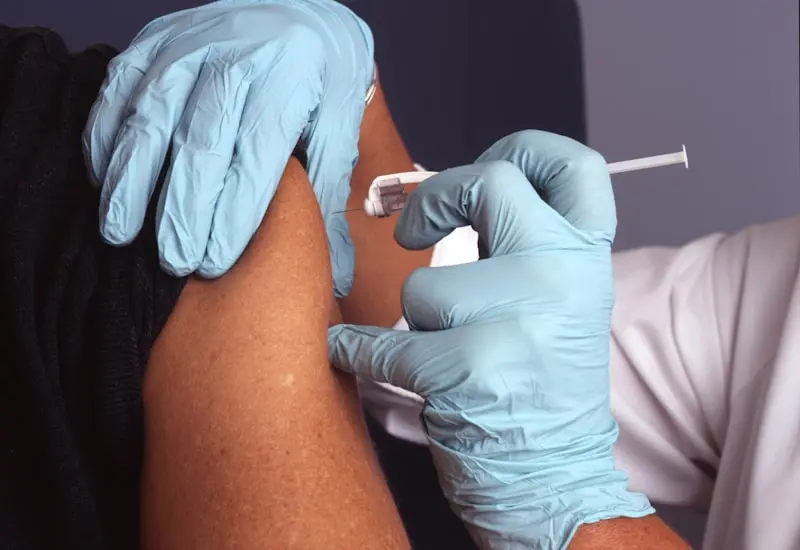

Welcome to Stackly. Experience premium healthcare driven by clinical excellence, state-of-the-art medical technology, and a dedicated team of world-class specialists.
Patients Cured
Success Rate
Specialists
5-Star Healthcare Service
Always Ready For You
Stackly is a flagship wellness center designed to offer high-caliber treatments with clinical warmth and medical integrity.

Years of Clinical Excellence
We build trusted patient relationships by prioritizing advanced diagnostic procedures, preventative counseling, and personalized healthcare plans.
Our medical protocols align with international healthcare quality certifications. Experience wellness through compassionate clinical diagnostics.
Learn More About UsWe provide diagnostic, clinical, and surgical treatments categorized under world-standard wellness workflows.
Complete cardiac health evaluations including Electrocardiograms (ECG), echocardiogram, stress screenings, and heart failure management.
View SpecialtiesCompassionate care for infants, children, and adolescents. Focuses on developmental milestones, vaccinations, and chronic pediatric conditions.
View SpecialtiesComprehensive neurological consultation for chronic headaches, nervous system balance problems, sleep distress, and stroke preventions.
View SpecialtiesBoard-certified experts from global institutes.
Precision diagnostics and modern infrastructure.
Holistic attention and dedicated patient tracking.
Full financial transparency and zero hidden fees.
We combine advanced technological treatments with compassionate family practice to make sure you get the best medical rehabilitation program available.
Our trauma intensive unit operates round-the-clock. If you or your loved ones face any clinical emergency, call our medical desk immediately.
Real experiences shared by patients who completed their therapeutic and clinical processes at Stackly.
"The clinical care I received under Dr. Adrian Vance was absolute perfection. The diagnostic labs delivered my cardiac reports in 20 minutes, and the recovery tracking was remarkable."
Cardio Patient
"Highly recommend Dr. Sarah Jenkins for family pediatric needs. My toddler was completely comfortable throughout the immunization procedure, the staff was extremely friendly."
Mother of 2
"As a chronic headache sufferer, the Neurological Consultations with Dr. Julian Cross completely turned my life around. The focus on preventative lifestyle tracking and sleep hygiene counseling was outstanding."
Neurology Patient
Read health tips, food choices guidelines, and modern diagnostics essays written by our physicians.

Discover which organic greens, fatty fish, and nuts help lower systemic bad cholesterol levels and optimize heart muscle contractility.
Read Article
How cardiovascular workouts trigger dopamine synthesis, decrease mental anxiety index, and preserve cognitive grey matter cells.
Read Article
A step-by-step guidance on light exposure, breathing exercises, and cognitive switches to trigger deep restorative REM sleep.
Read Article